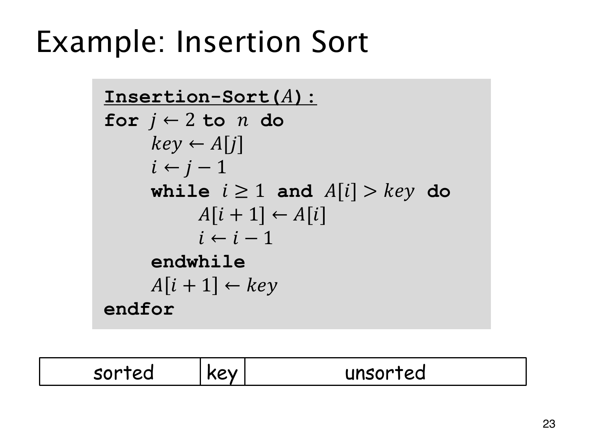

L1.11 · 第 23 页讲解原文
查看这一页课件

插入排序维护有序前缀
Insertion Sort（插入排序）第 j 轮开始时，A[1],…,A[j−1] 已有序。先把 A[j] 存为 key，再从 i=j−1 向左寻找插入位置。
只要 i≥1 且 A[i]>key，就把 A[i] 移到 A[i+1]，再令 i 减 1。结束后写入 A[i+1]=key。预先保存 key，才能避免右移覆盖掉原值。
例如有序前缀 [2,5,7] 插入 4，先右移 7、5，再在 2 后放 4，得到 [2,4,5,7]。图中的 sorted、key、unsorted 正是在标这条边界。
循环不变式是：第 j 轮开始时，前 j−1 个元素有序且仍是原来的那些元素。插入后它扩展到前 j 个，最后整列有序。
key 比整个前缀大时不必右移，最小时则需右移 j−1 次。平均分析必须给输入次序指定分布，不能拿最坏次序替代。
伪代码使用严格大于，等值元素不会越过彼此。随机排列的对称性分析通常再假设元素互异。